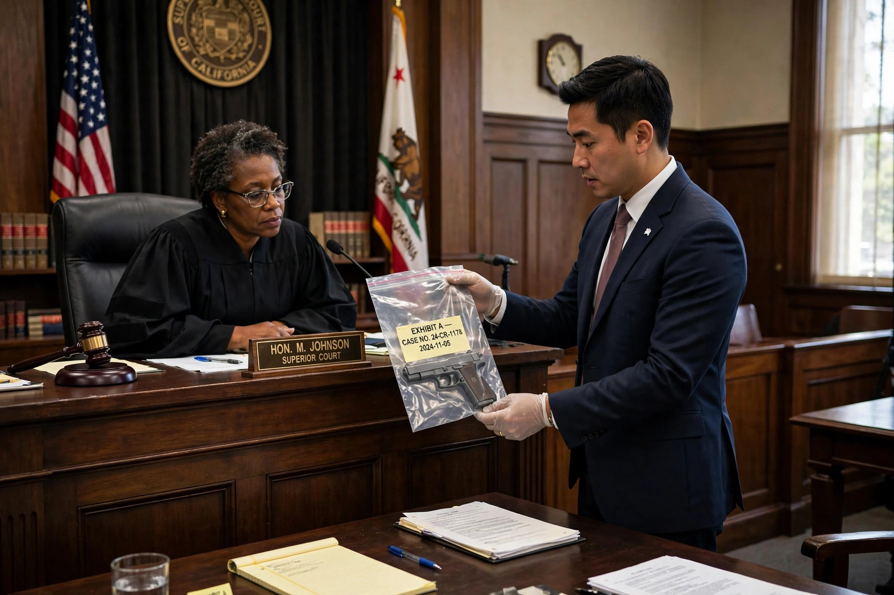

From Wikipedia, the free encyclopedia

Relevance, in the common law of evidence, is the tendency of a given item of evidence to prove or disprove one of the legal elements of the case, or to have probative value to make one of the elements of the case likelier or not. Probative is a term used in law to signify "tending to prove." Evidence that is not relevant is not admissible in court, and evidence that is relevant but creates an unfair risk of prejudice, confusion, or delay may be excluded at the discretion of the trial judge.
Under the United States Federal Rules of Evidence, Rule 401 defines relevant evidence as "evidence having any tendency to make the existence of any fact that is of consequence to the determination of the action more probable or less probable than it would be without the evidence." This is a deliberately low threshold: evidence need only shift the probability of a material fact by some degree to qualify as relevant.
Two distinct concepts are embedded in the definition. Probative value concerns the strength of the logical connection between the evidence and the proposition it is offered to prove, while materiality concerns whether the proposition itself matters to the substantive law governing the case. Evidence must be both probative and material to be relevant.
Relevance is a necessary but not sufficient condition for admissibility. Rule 402 provides that relevant evidence is generally admissible unless excluded by the Constitution, a statute, or another rule, and that irrelevant evidence is inadmissible. Rule 403 permits a court to exclude relevant evidence if its probative value is substantially outweighed by a danger of unfair prejudice, confusing the issues, misleading the jury, undue delay, wasting time, or needlessly presenting cumulative evidence.
Some jurisdictions distinguish between logical relevance, the purely rational connection described above, and legal relevance, which additionally requires that the probative value of the evidence be worth the cost of admitting it. The Australian uniform evidence law, for example, defines relevance in similar probabilistic terms and then subjects relevant evidence to a series of discretionary and mandatory exclusions.